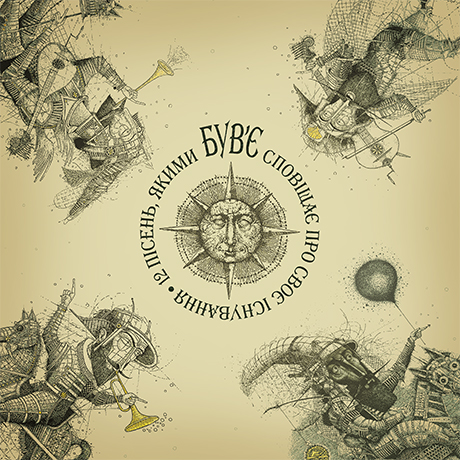

12 пісень, якими Був'є сповіщає про своє існування
В Н
ебі
Д
ао
Я Б
іжу
Не С
вари
М
ене
М
амо
В
икреслений
З
і
С
писку
С
кажи
М
ені
С
лова
Г
олова
Т
ак
Н
есподівано
В
олиняки
Б
ути
Р
азом
Нове П
окоління
С
тіна
Ц
інуйте
М
ене